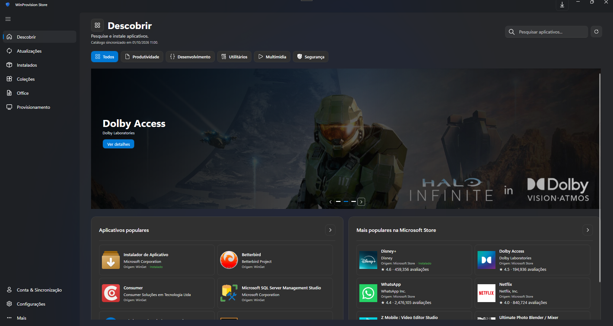
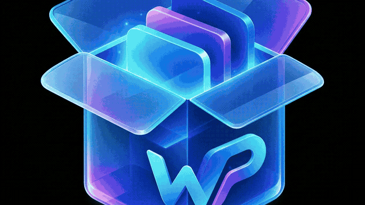

Descubra aplicativos
Pesquise e explore catálogos do WinGet e da Microsoft Store, com detalhes, filtros e informações de cada pacote.
Descubra aplicativos, instale em lote, acompanhe atualizações e prepare seu computador com perfis que você pode reutilizar.
Windows 10 e 11 · .NET 10 · WPF-UI 4.3.0

O que você pode fazer
Do primeiro aplicativo instalado às preferências do sistema, as ferramentas ficam organizadas num fluxo claro.
Pesquise e explore catálogos do WinGet e da Microsoft Store, com detalhes, filtros e informações de cada pacote.
Selecione pacotes, acompanhe a fila e mantenha seus aplicativos atualizados pelas fontes disponíveis.
Organize aplicativos em coleções e leve suas escolhas para outra instalação por meio de perfis JSON.
Configure tema, cor de destaque, papel de parede, opções do Explorador e preferências compatíveis do sistema.
Monte configurações compatíveis do Microsoft 365/Office e revise as opções antes de iniciar a implantação.
Consulte histórico, registros locais e, quando configurado, o acompanhamento remoto de uma execução automatizada.

Um fluxo simples e reutilizável
Prepare uma instalação no seu ritmo. Revise o que selecionou e aplique quando estiver pronto.
Encontre aplicativos e opções do Windows nos menus do app.
Exporte ou importe um JSON para repetir sua configuração.
Use o fluxo guiado ou o Orchestrator para executar o perfil e ver o progresso.
Automação com acompanhamento
Uma experiência dedicada para aplicar perfis JSON em sequência, instalar os pacotes selecionados e acompanhar as etapas de personalização. Escolha a interface ou o terminal e configure o registro da execução localmente ou na nuvem.
Baixar e experimentarFeito para Windows
O app combina tecnologias nativas e automações de catálogo para manter as tarefas próximas da plataforma.
Cliente desktop para Windows com interface nativa.
Controles Fluent e componentes visuais compartilhados.
Catálogos e métodos de instalação integrados ao fluxo.
Rotinas separadas para catálogos, qualidade, build e publicação.
Projeto aberto
Consulte o código, acompanhe as versões e veja como o projeto evolui.
Instalações e ajustes são iniciados pelo usuário ou por um perfil que ele escolheu. Revise o conteúdo antes de aplicar, especialmente em implantações automatizadas.
O WinProvision Store foi criado com auxílio de ferramentas de inteligência artificial em atividades de planejamento, implementação, documentação e revisão. A direção e a manutenção do projeto são conduzidas pelo autor.
Comece por aqui
Baixe o app, confira o código ou acompanhe a próxima versão.